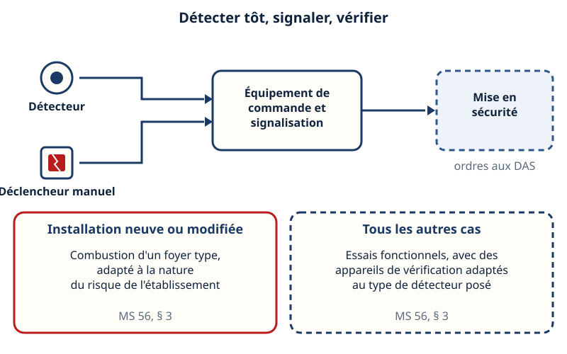
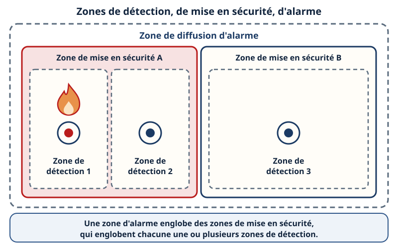
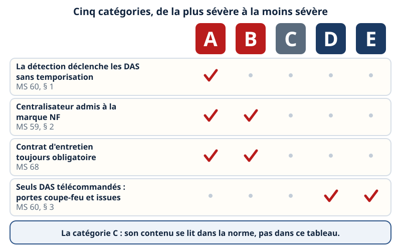
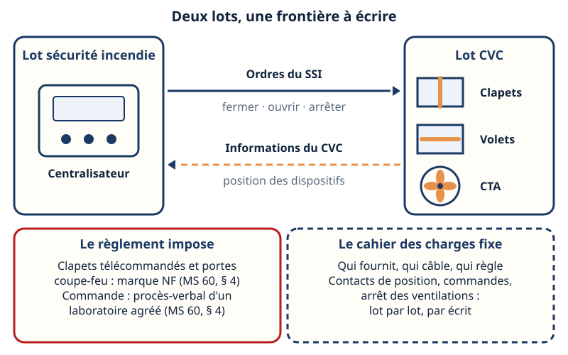
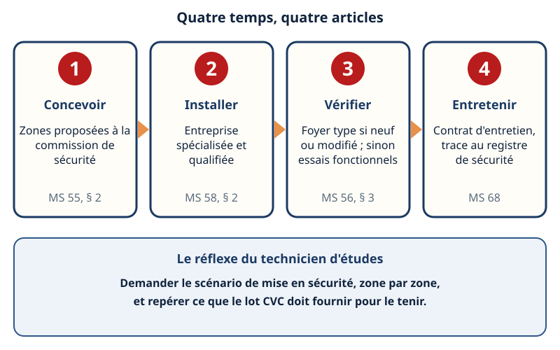

Mini-station commentée · 8 écrans et 4 questions · environ 10 minutes
Objectif
À la fin de la station, vous savez décrire le système de sécurité incendie comme un chef d'orchestre — ce qui détecte, ce qui traite, ce qui agit —, lire l'emboîtement des zones, situer les catégories A à E, comprendre comment l'alarme d'une zone atteint les dispositifs de cette zone, et dire ce que vous demandez au lot CVC : commandes, retours de position, arrêt des ventilations. Vous savez aussi comment on vérifie et on entretient l'installation.
Référentiel : TP TECVC, REAC TP-00133 — compétences CP7 (ventilation tertiaire) et CP10 (centrale de traitement d'air), pour la partie « ordres du système de sécurité incendie reçus par les ventilations ».
Chaque écran peut être expliqué à voix haute : le bouton « Écouter » commente ce que vous voyez. Rien n'est dit qui ne soit aussi écrit.
1 / 12
Écran 1 sur 8
Un chef d'orchestre : recueillir, traiter, agir
Dans un établissement recevant du public (ERP), le règlement définit le système de sécurité incendie (SSI) comme l'ensemble des matériels qui servent à recueillir les informations ou les ordres liés à la seule sécurité incendie, à les traiter, et à effectuer les fonctions nécessaires à la mise en sécurité de l'établissement (article MS 53, § 1).
La mise en sécurité peut comporter cinq fonctions : le compartimentage, l'évacuation des personnes (diffusion du signal, gestion des issues), le désenfumage, l'extinction automatique et la mise à l'arrêt de certaines installations techniques. Dans un bâtiment tertiaire, la ventilation en fait souvent partie : c'est ce qui rend cette station utile à un technicien d'études CVC.

Recueillir, traiter, agir : le SSI fonctionne comme un chef d'orchestre.
Écran 2 sur 8
La détection : détecter tôt, éviter les fausses alarmes
Le système de détection regroupe des détecteurs et des déclencheurs manuels, reliés à un équipement de commande et de signalisation. Il doit déceler et signaler tout début d'incendie dans les meilleurs délais et mettre en œuvre les équipements de sécurité qui lui sont asservis (MS 56, § 2).
Pendant la présence du public, la détection suppose un personnel permanent et qualifié, capable d'alerter les sapeurs-pompiers (MS 57, § 1).
Toutes dispositions doivent être prises pour éliminer les fausses alarmes sans nuire à l'efficacité (MS 57, § 2).
La fonction est vérifiée par la combustion d'un foyer type pour une installation neuve ou modifiée, et par des essais fonctionnels dans les autres cas (MS 56, § 3).

Deux façons de vérifier la même fonction, selon que l'installation est neuve ou non.
Écran 3 sur 8
Les zones : trois sortes, emboîtées
Une zone de détection est surveillée par un ensemble de détecteurs et/ou de déclencheurs manuels, avec une signalisation commune (MS 54).
Une zone de mise en sécurité est une zone susceptible d'être mise en sécurité par le système de mise en sécurité incendie (MS 54).
Une zone de diffusion d'alarme englobe une ou plusieurs zones de mise en sécurité, et chaque zone de mise en sécurité englobe une ou plusieurs zones de détection (MS 55, § 1).
Ces trois zones n'ont pas nécessairement les mêmes limites géographiques (MS 54). En dehors des cas prévus par le règlement, c'est au concepteur ou à l'exploitant de proposer à la commission de sécurité le découpage en zones (MS 55, § 2).

Le foyer est détecté dans une zone de détection ; c'est la zone de mise en sécurité qui l'englobe qui réagit.
Écran 4 sur 8
La mise en sécurité : le centralisateur et les DAS
Le système de mise en sécurité incendie agit soit à partir des informations du système de détection, soit à partir d'ordres de commandes manuelles. Il comprend des dispositifs actionnés de sécurité (DAS), répartis éventuellement par zones de mise en sécurité, et les équipements nécessaires pour en assurer la commande (MS 59, § 1) : le centralisateur de mise en sécurité incendie.
Le désenfumage est commandé par la détection automatique quand les dispositions particulières l'imposent ; pour les cages d'escalier, la commande est uniquement manuelle (MS 60, § 1).
Les mécanismes de commande des DAS doivent avoir un procès-verbal en cours de validité d'un laboratoire agréé ; les portes coupe-feu et les clapets télécommandés doivent être admis à la marque NF (MS 60, § 4).
L'alarme part du détecteur, passe par le centralisateur et atteint les DAS de la zone.
Écran 5 sur 8
Les catégories A à E : de la plus sévère à la moins sévère
Les SSI répondent aux normes en vigueur et aux principes du règlement, et sont classés en cinq catégories, appelées A, B, C, D et E, par ordre de sévérité décroissante. Le règlement de chaque type d'établissement précise, le cas échéant, la catégorie exigée (MS 53, §§ 2 et 3).
A : quand le règlement prévoit que la détection automatique déclenche les DAS, ce déclenchement se fait sans temporisation (MS 60, § 1).
A et B : centralisateur admis à la marque NF (MS 59, § 2) et contrat d'entretien toujours obligatoire (MS 68).
D et E : les seuls DAS que l'alarme peut télécommander sont les portes coupe-feu à fermeture automatique et le déverrouillage des issues de secours (MS 60, § 3).
Ce que la catégorie C impose se lit dans la norme d'installation, payante : ce tableau ne l'invente pas.

Une coche par exigence lue dans le règlement : la colonne C attend la norme.
Écran 6 sur 8
Le scénario de mise en sécurité : zone par zone
Un scénario de mise en sécurité répond à une question simple : quand telle zone détecte, quels dispositifs sont commandés ? Il se lit comme un tableau à double entrée : les zones en lignes, les DAS en colonnes.
Le découpage en zones est proposé par le concepteur ou l'exploitant à la commission de sécurité (MS 55, § 2).
Les DAS sont « répartis éventuellement par zones de mise en sécurité » (MS 59, § 1) : le scénario dit, zone par zone, quels dispositifs répondent à quelle détection.
L'exemple ci-dessous est fictif : il montre la façon de lire un scénario, pas un scénario à recopier. Ici, une ventilation commune s'arrête quelle que soit la zone en alarme.

Exemple fictif : la ligne de la zone en alarme dit ce qui est commandé.
Écran 7 sur 8
Ce que le lot CVC doit fournir
Le SSI commande, le CVC obéit : la frontière entre les deux lots doit être écrite. Le règlement fixe le cadre, le cahier des charges du projet règle le reste.
Ce que le règlement impose : clapets télécommandés et portes coupe-feu admis à la marque NF ; mécanisme de commande des DAS avec procès-verbal d'un laboratoire agréé (MS 60, § 4).
Ce que le cahier des charges fixe : qui fournit les organes, qui câble, qui règle ; quelles commandes reçoivent les clapets, volets et ventilateurs de désenfumage ; quels contacts de position remontent au centralisateur ; quelles ventilations s'arrêtent et sur quel ordre.
Pratique de bureau d'études : la liste du point 2 est à faire valider par la relecture métier avant tout usage en projet.

Deux lots, une frontière à écrire : ordres dans un sens, informations dans l'autre.
Écran 8 sur 8
Réception, essais, entretien — bilan
Concevoir : les zones sont proposées à la commission de sécurité (MS 55, § 2).
Installer : la détection est posée par des entreprises spécialisées et qualifiées, avec des équipements de détection à la marque NF ou équivalente (MS 58, §§ 1 et 2).
Vérifier : foyer type pour une installation neuve ou modifiée, sinon essais fonctionnels (MS 56, § 3).
Entretenir : contrat avec un installateur qualifié, notice et contrat annexés au registre de sécurité (MS 58, §§ 3 et 4) ; entretien du SSI par un technicien compétent ou par l'installateur, avec un contrat obligatoire pour les catégories A et B (MS 68).
Le réflexe : demander le scénario zone par zone et repérer ce que le lot CVC doit fournir.

Quatre temps, quatre articles : de la conception à l'entretien.
Question 1 sur 4
L'arrêt d'une CTA sur alarme : à quelle fonction se rattache-t-il ?
Rappel de l'écran 1 — les cinq fonctions de la mise en sécurité.
Question 2 sur 4
Quelle imbrication des zones respecte le règlement ?
Rappel de l'écran 3 — trois sortes de zones, emboîtées.
Question 3 sur 4
Catégorie E : quel dispositif l'alarme peut-elle télécommander ?
Rappel de l'écran 5 — la ligne des seuls DAS télécommandés.
Question 4 sur 4
Détection neuve : comment vérifie-t-on qu'elle remplit sa fonction ?
Rappel du bilan — la carte « Vérifier ».
Les correspondances de la station
Les clapets coupe-feu (même sous-ligne)
— le DAS qui se ferme dans la gaine : ce que le SSI lui commande.
Le désenfumage (même sous-ligne)
— les volets et ventilateurs que le SSI ouvre et met en marche, et la commande manuelle des escaliers.
Classer le bâti (même sous-ligne)
— le type et la catégorie de l'établissement (1 à 5), dont dépend la catégorie de SSI exigée (A à E) ; ne pas confondre les deux échelles.
NF C 15-100 (autre sous-ligne)
— l'alimentation électrique des matériels que le SSI commande.